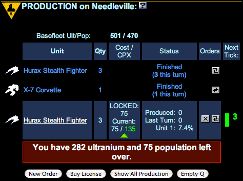

Unit Production
In the quest for galactic domination, you need more, bigger, and better forces. The Production section on each World Information page lets you order new units on that world, and shows the status of all existing orders. To review the introduction to the production system, see Production.
To Place Production Orders
- On a World Information page, click New Order to display the Production page. This page shows the list of units that can be built on that world. See Licenses to learn how to add other units to this list.
- Click the radio button next to the unit you want to produce.
- Enter an amount in the Quantity field. The amount may not exceed the number in the unit's Max column. If you want to buy the maximum number, click the Buy Max button, and the quantity will automatically be set to the maximum. If you need more units than that, you must place more orders . . . you can place multiple orders for the same unit, or click the
button to duplicate an existing order.
- Click Buy to place the order. You should see an acknowledgement at the top of the screen.
- Repeat the process if you want to place another order.
- When you're finished, click Finished to return to the World Information page. Placing an order for 50 Super Space Fighters.
To Review Production Orders
Go to one of your World Information pages and scroll down to the Production section. This lists the world's "queue" of production orders. Each order is in one of three states: Finished, In Progress, or Waiting.
A world's Production Queue, showing both what was built last tick and what is in the queue now.Finished Orders
When a production order has been completed, the status column reads Finished. It is followed by the number of units completed during the previous tick. The Status column indicates the total number of units produced in the order. You will only see orders finished during the previous tick.In Progress Orders
At any time, only one production order on a world can be in progress. Work on the next order begins only after the previous order is finished or canceled. The cost per unit for an in-progress order is fixed and does not fluctuate with the economy. The progress of the current order can be seen in the Status column:- Produced: Total units produced so far. When this number equals the Qty column, the order is finished.
- Last Turn: Number of units produced during the last tick and added to the Base Fleet.
- Unit X: Percentage of completion of the unit in progress. When a unit is not completely built, this number indicates how far along it is. If a unit is half built, for instance, it will require half the rated CST in Ultranium, and half the unit's CPX in population, to get it finished.
Waiting Orders
When you place a new order, or when a world has not yet begun production on an existing order, its status is Waiting. These orders remain in the world's production queue. They will be completed in the order they appear.
To Rearrange the Production Queue
Click to move an order to the top of the production queue. (But you cannot move a unit order above the order for its license!)
To Cancel an Order, and to Restore It Again
Click to cancel the order. Note: If you cancel a partially completed unit, it will be lost entirely, and you will not get back the Ultranium already spent on it.
However, you CAN change your mind after canceling, as long as the tick hasn't run.
After you cancel an order, you'll notice a new icon in the "Orders" column of the production queue. Click the icon to restore the cancelled order to your queue.
To Duplicate a Production Order
Sometimes you want to duplicate an existing production order. The most common reason is to produce a lot of small units. As part of the economic system, you are limited to ordering 50 units at a time, even with the smallest units, and the largest units can only be ordered one at a time.
But, especially in a game with no economy, you may want to get around that. To do so, use the "Clone Order" button, which looks like this: . Click this button beside any order to place a complete duplicate of that order.
To Clear the Production Queue
The Empty Q button will remove all items in the production queue, including any partially built one. It's a time-saver when you decide to totally reorganize a world's production.
To Review All Worlds' Production
Click the "factory" icon in the top bar to see the All Production page. This shows all your worlds and their current production orders. If there are worlds with no production, they will be noted at the top of the report.
Autobuilding
Under certain circumstances, your homeworld will build without orders, or Nobody worlds will build new units. This is called "autobuilding," and it gets its own topic <here.